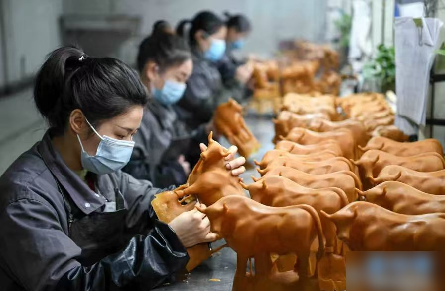

【公司简介】青岛半岛礼品有限公司成立于 2008 年 3 月，注册地青岛市李沧区书院路 123-9 号，是一家集礼品策划、设计、开发、制造、加工、配送、服务于一体的大型礼品批发配送企业，营业执照涵盖工艺品、办公用品、日用百货等多个品类。
【渠道特点】公司长期服务于金融、通信、地产等头部 B 端客户的福利采购、商务定制、节庆营销等场景，单一客户单次订单往往涉及多品类、多 SKU 组合，对供应链响应、设计打样、跨部门协同的稳定性要求远高于普通零售。
【服务切入点】本次合作针对的是"B 端大客户订单响应链路长"这一核心痛点。华认联国际项目组没有从通用管理课切入，而是先与订单中心、设计部、仓储部、客服部 4 个部门做了完整的流程穿越，绘制 11 条关键业务流程图，把"接单—打样—生产—入库—配送—对账—售后"全链路的 38 个堵点按客户感知与内部影响双维度排序。
【价值落地】基于诊断结论，项目组与公司共同搭建了 B 端订单全流程 SOP、客诉处理六步法，并配套"日站会、周复盘、月评比"三级运营机制和可视化订单看板，把管理动作固化到日常节奏中。项目结束后公司逐步把"以数据看板驱动管理决策"作为组织共识，为后续接入 ERP 与客户分级管理打下基础。
← 返回客户案例